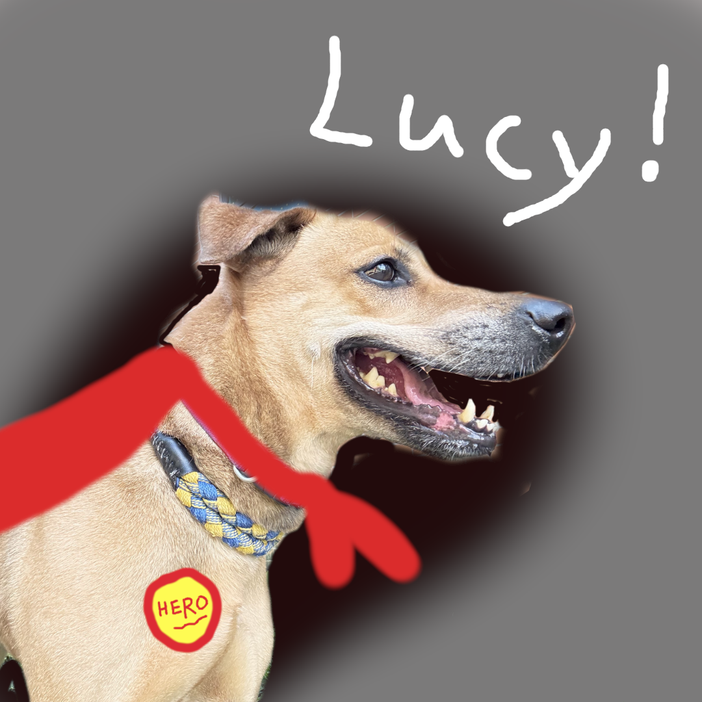
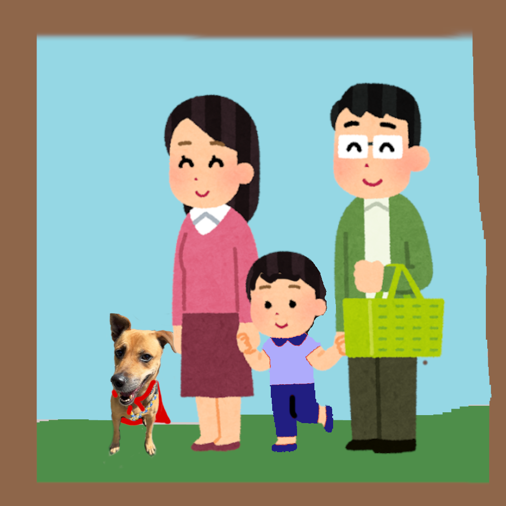
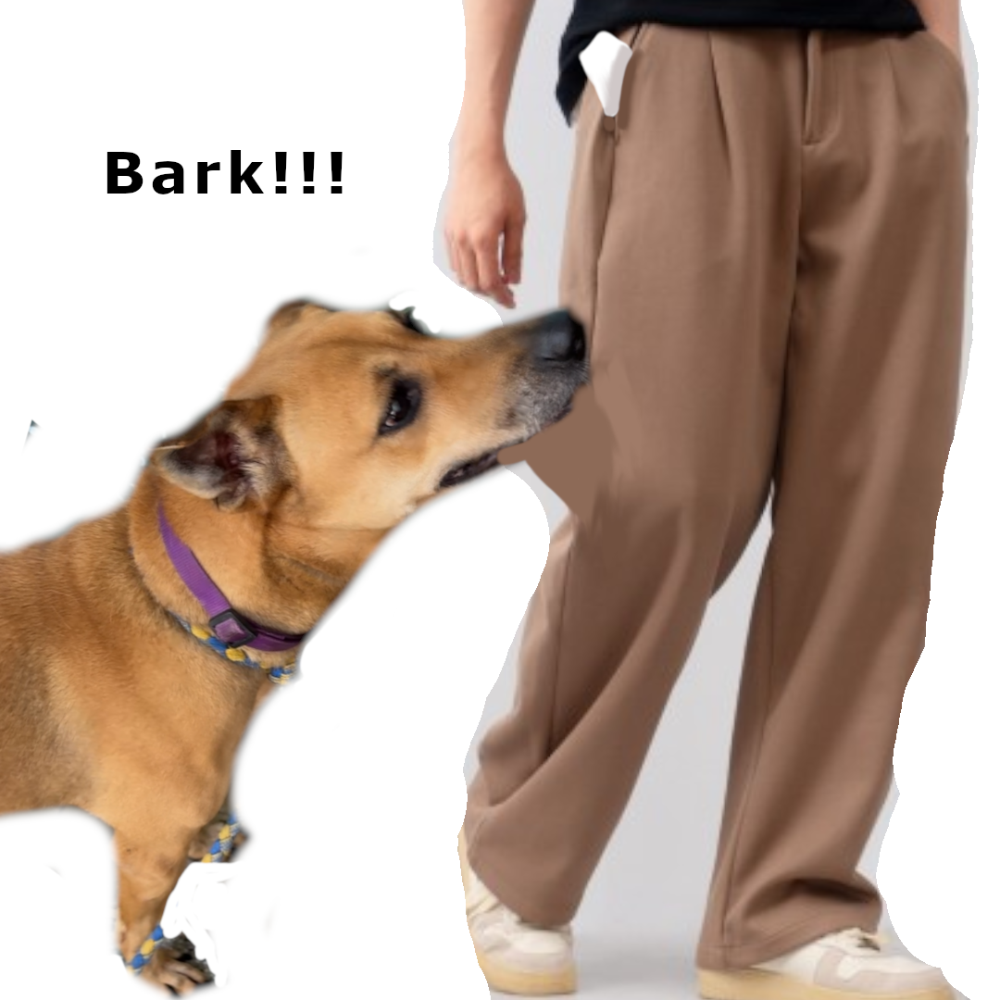
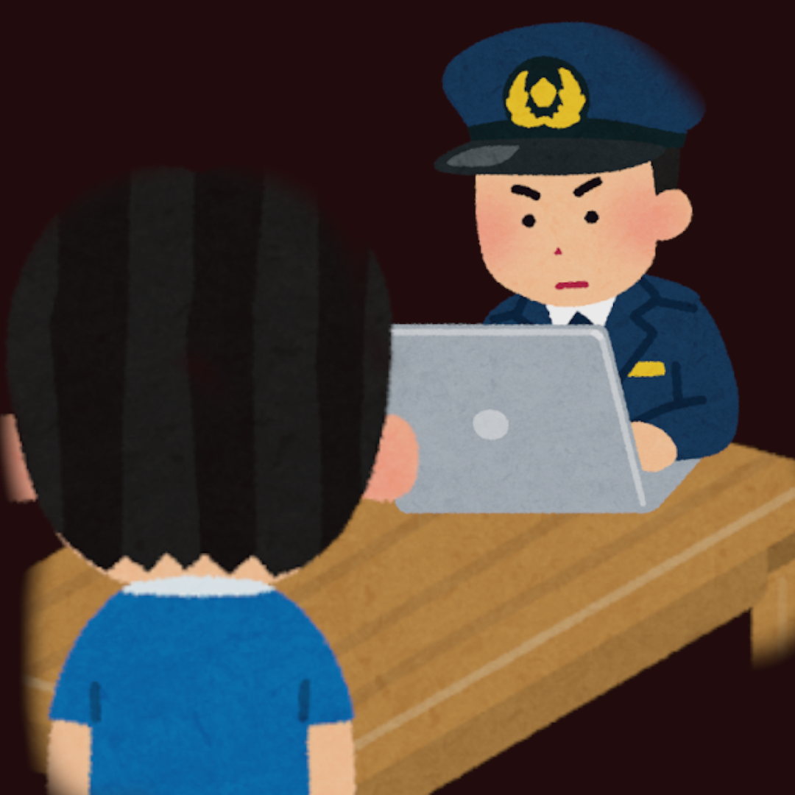
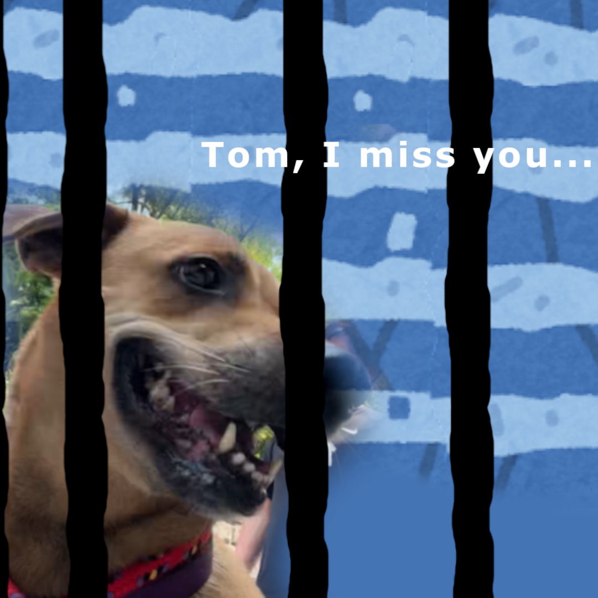

Kailyn
Kailyn
Lucy's story
A long, long time ago, there was a world, everyone called it “Hell”.
That was a rule called “If you
make a
mistake you will die.”
In this world everyone is scary, afraid to fail.
But there was a dog,
she was called
“Lucy”.
She was always happy, always liked to trust humans, although she was just a normal female
dog.
Even
though she tried to help everyone in this world, let people not make any mistakes, that is why she was a
popular dog in the world.

“Listen! Your mission was to save everyone, anything, which didn't make people dead.”
When Lucy was small, she always kept this sentence in her mind, no one knew the reason, they only knew
“We
have a hero to save us! ”.
One day a boy borned, his name was “Tom”, he often had a bad thought in
his
brain, but he never did those things, because “Lucy” always saved him.
Every night Lucy slept
beside Tom’s
bedroom door, even when Tom pushed her away, she still wagged her tail every morning.
Then when he
growed
up, his family adopted her, but he was still mad at her.
A few months passed and that was a big
important
test for Tom, if he didn’t get a perfect grade, he wouldn't have school.He tried to plan how to cheat on
the
test without Lucy finding the plan, even though"wouldn't have school”was not a count a mistake.

On the test day. She was patrolling outside, and did something she did before. But she found out the
question “Why did Tom in a few days don't do any bad thing?”
After a few seconds, she just ran to
Tom's
school, but at the same moment, the test was starting.
She ran and ran, afraid she didn’t save
him, she
wanted to cry, but she didn’t.
When Tom was starting to cheat, Lucy was on time at his classroom, she was ruffing with loud sound, and
going to the classroom to snatch Tom’s clothes and make Tom leave the classroom.
“NO, LUCY, STOP! IF I LEAVE THE CLASSROOM, I CAN’T CONTINUE THE TEST!” He shouted.

But Lucy ignored him, and continued, until the cheating paper fell down.
“How, the cheating paper? Well, it's a good thing you weren't in the classroom.”
The teacher came out and checked what happened.
“And you leave the classroom you can’t get in any more.”
The teacher said, and turned around and walked away.
Tom looked at the cheating paper on the floor. He knew Lucy had saved his life, but he lost his future.
-
“Ok, I'm a policeman, so what did you want to say, Mr.Tom?”
“This dog attacked me, her name is Lucy.”

A few days passed, and there was a letter at their door.
Lucy saw the letter and went to take the
letter.
“Dear Lucy, We had bad news for you, the public reported that you made a mistake.
But that is a good thing for you, you are a dog, so you don’t have to give your life for us.
So our final thought is send you to the shelter.
Please, keep all the stuff, and come to the
police station
at six o’clock p.m. Be on time.
Sincerely, Hell Government”
When Lucy finished looking, Tom was laughing behind her.
“Howl…”
She felt upset, but she still went to the police station.
But everyone knew Lucy didn’t make the mistake, she just got betrayed by Tom.
Even though Lucy got upset, she was still happy all the time and thrushed people, and in the shelter she
didn’t give up on saving anything, and she still waited beside the door every evening, hoping Tom would
come
visit her.
Even after these things, Lucy still believed humans were kind.
So If you adopt her you can have a very good life, because she can help you not make mistakes, and you
can
be happy all the time.
